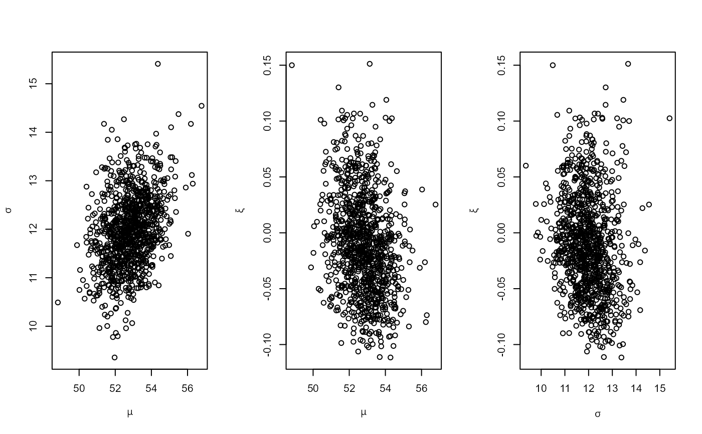

Performs Bayesian inference using a GEV distribution using block maxima, with the option to make an adjustment for the numbers of non-missing raw values in each block.
Usage
gev_bayes(
data,
block_length,
block,
adjust = TRUE,
discard = 0,
init = "quartiles",
prior = revdbayes::set_prior(prior = "flat", model = "gev"),
n = 1000,
...
)Arguments
- data
Either
a numeric vector containing a time series of raw data,
an object returned from
block_maxima, a list with componentsmaxima,notNAandn,a data frame or named list containing the same information, that is, the variables
maxima,notNAandn, as an object returned fromblock_maxima, such as the data frameBrestSurgeMaxima.
- block_length
A numeric scalar. Used calculate the maxima of disjoint blocks of
block_lengthcontiguous values in the vectordata. Iflength(data)is not an integer multiple ofblock_lengththen the values at the end ofdatathat do not constitute a complete block of lengthblock_lengthare discarded, without warning.- block
A numeric vector with the same length as
data. The value ofblock[i]indicates the block into whichdata[i]falls. For example,blockcould provide the year in which observationiwas observed.- adjust
A logical scalar or a numeric scalar in
[0, 100].If
adjust = TRUEthen the adjustment, described in Details, for the numbers of non-missing values underlying each block maximum is performed.If
adjust = FALSEthen no adjustment is made, that is, the block maxima are treated as if the underlying raw data have no missing values.
- discard
A numeric scalar. Any block maximum for which greater than
discardpercent of the underlying raw values were missing is discarded. Whether or not an adjustment for missingness is made for the block maxima that remain is determined byadjust.- init
Either a character scalar, one of
"quartiles"or"moments", or a numeric vector of length 3 giving initial estimates of the GEV location, scale and shape parameters: \(\mu\), \(\sigma\) and \(\xi\). Ifinit = "quartiles"then initial estimates of \(\mu\) and \(\sigma\) are based on sample quartiles of block maxima, ignoring the underlying numbers of non-missing raw data, and a value of 0 for \(\xi\). Ifinit = "moments"then instead we use the sample mean and variance of these maxima and an initial value of 0.1 for \(\xi\).- prior
Specifies a prior distribution for the GEV parameters. This is most easily set using
revdbayes::set_prior. The default is a prior \(\pi(\mu, \sigma, \xi) \propto \sigma^{-1}\) for \(\sigma > 0\). Seerevdbayes::set_priorfor details.- n
A non-negative integer. The number of values to simulate from the posterior distribution for \((\mu, \sigma, \xi)\).
- ...
Further arguments to be passed to
rust::ru.
Value
An object returned from rust::ru. The following components are
added to this list
model: ="gev".data,prior: the inputsdataandprior.call: the call togev_bayes.maxima: the vector of block maxima used to fit the model.notNA: the number of non-missing raw values on which the maxima inmaximaare based.n: the maximal block length, that is, the largest number of values that could have been observed in each of these blocks.adjust: a logical scalar indicating whether or not the adjustment in the Details section ofgev_mlewas performed. This isTRUEonly if the input argumentadjustwasTRUE.adjust,discard: the values of these input arguments.
The class of the returned object is
c("evpost", "ru", "bayes", "evmissing").
Objects of class "evpost" have print,
summary and plot
S3 methods.
Details
The likelihood described in gev_mle is combined with the prior
density provided by prior to produce, up to proportionality, a
posterior density for \((\mu, \sigma, \xi)\).
A function to evaluate the log-posterior is passed to rust::ru to
simulate a random sample from this posterior distribution using the
generalised ratio-of-uniforms method, using relocation of the mode of the
density to the origin to increase efficiency. The value of init is used
as an initial estimate in a search for the posterior mode. Arguments to
rust::ru can be passed via .... The default setting is
trans = "none", that is, no transformation of the margins, and
rotate = TRUE, rotation of the parameter axes to improve isotropy
with a view to increasing efficiency.
Examples
## Simulate data with missing values
set.seed(24032025)
blocks <- 50
block_length <- 365
# Simulate raw data from an exponential distribution
sdata <- sim_data(blocks = blocks, block_length = block_length)
block_length <- sdata$block_length
# Sample from the posterior based on block maxima from full data
post1 <- gev_bayes(sdata$data_full, block_length = block_length)
summary(post1)
#> ru bounding box:
#> box vals1 vals2 vals3 conv
#> a 1.0000000 0.000000000 0.00000000 0.000000000 0
#> b1minus -0.2247368 -0.429004846 0.15974262 -0.110371644 0
#> b2minus -0.1621321 -0.019225412 -0.24818777 0.008851358 0
#> b3minus -0.1642482 -0.029047475 0.12881751 -0.250596916 0
#> b1plus 0.1879785 0.313252280 0.05827902 -0.054719278 0
#> b2plus 0.2363722 -0.006931975 0.44374854 0.063496607 0
#> b3plus 0.2210291 -0.022860500 0.15366682 0.392587554 0
#>
#> estimated probability of acceptance:
#> [1] 0.3014772
#>
#> sample summary
#> mu sigma xi
#> Min. :5.293 Min. :0.8603 Min. :-0.26108
#> 1st Qu.:5.752 1st Qu.:1.1560 1st Qu.: 0.02199
#> Median :5.891 Median :1.2526 Median : 0.10351
#> Mean :5.892 Mean :1.2722 Mean : 0.10836
#> 3rd Qu.:6.023 3rd Qu.:1.3770 3rd Qu.: 0.18551
#> Max. :6.622 Max. :2.1174 Max. : 0.55320
# Sample with adjustment for the number of non-missing values per block
post2 <- gev_bayes(sdata$data_miss, block_length = block_length)
summary(post2)
#> ru bounding box:
#> box vals1 vals2 vals3 conv
#> a 1.0000000 0.000000000 0.00000000 0.00000000 0
#> b1minus -0.2097759 -0.401170205 0.13635852 -0.09914656 0
#> b2minus -0.1494487 -0.022968875 -0.22890427 0.01842038 0
#> b3minus -0.1581289 -0.032708269 0.10926826 -0.24677015 0
#> b1plus 0.1721255 0.286609292 0.06011017 -0.05124685 0
#> b2plus 0.2234551 -0.007772628 0.43820186 0.12479461 0
#> b3plus 0.2014593 -0.045204764 0.14281383 0.35926041 0
#>
#> estimated probability of acceptance:
#> [1] 0.2907822
#>
#> sample summary
#> mu sigma xi
#> Min. :5.280 Min. :0.8527 Min. :-0.18637
#> 1st Qu.:5.691 1st Qu.:1.0868 1st Qu.: 0.09059
#> Median :5.824 Median :1.1877 Median : 0.16830
#> Mean :5.832 Mean :1.2026 Mean : 0.17431
#> 3rd Qu.:5.978 3rd Qu.:1.2979 3rd Qu.: 0.25386
#> Max. :6.691 Max. :1.8310 Max. : 0.62626
# Do not make the adjustment
post3 <- gev_bayes(sdata$data_miss, block_length = block_length,
adjust = FALSE)
summary(post3)
#> ru bounding box:
#> box vals1 vals2 vals3 conv
#> a 1.0000000 0.00000000 0.00000000 0.000000000 0
#> b1minus -0.2082312 -0.40085910 0.14744745 -0.103149590 0
#> b2minus -0.1478147 -0.01954635 -0.22582419 0.005746205 0
#> b3minus -0.1562453 -0.03627886 0.11614224 -0.243488523 0
#> b1plus 0.1704187 0.28270962 0.05796295 -0.045892040 0
#> b2plus 0.2170089 -0.02254364 0.40616047 0.037048161 0
#> b3plus 0.2016273 -0.03106869 0.12799587 0.361525655 0
#>
#> estimated probability of acceptance:
#> [1] 0.2963841
#>
#> sample summary
#> mu sigma xi
#> Min. :4.793 Min. :0.7996 Min. :-0.1796
#> 1st Qu.:5.326 1st Qu.:1.0626 1st Qu.: 0.0812
#> Median :5.461 Median :1.1525 Median : 0.1511
#> Mean :5.460 Mean :1.1667 Mean : 0.1620
#> 3rd Qu.:5.583 3rd Qu.:1.2562 3rd Qu.: 0.2332
#> Max. :6.128 Max. :1.6993 Max. : 0.5507
# Remove all block maxima with greater than 25% missing values and
# do not make the adjustment
post4 <- gev_bayes(sdata$data_miss, block_length = block_length,
adjust = FALSE, discard = 25)
summary(post4)
#> ru bounding box:
#> box vals1 vals2 vals3 conv
#> a 1.0000000 0.00000000 0.0000000 0.00000000 0
#> b1minus -0.4182415 -1.10654891 0.4865155 -0.30734329 0
#> b2minus -0.1955913 -0.03971873 -0.2912431 0.02574945 0
#> b3minus -0.2198241 -0.12004301 0.2127574 -0.34472904 0
#> b1plus 0.2516484 0.44696188 0.1351107 -0.14020089 0
#> b2plus 0.3656681 -0.06477154 0.8800835 0.33944115 0
#> b3plus 0.3040806 -0.09814424 0.2208264 0.57640392 0
#>
#> estimated probability of acceptance:
#> [1] 0.2318572
#>
#> sample summary
#> mu sigma xi
#> Min. :4.704 Min. :0.5289 Min. :-0.2197
#> 1st Qu.:5.227 1st Qu.:0.9553 1st Qu.: 0.2562
#> Median :5.391 Median :1.1013 Median : 0.4027
#> Mean :5.406 Mean :1.1407 Mean : 0.4197
#> 3rd Qu.:5.561 3rd Qu.:1.2873 3rd Qu.: 0.5627
#> Max. :6.471 Max. :2.3790 Max. : 1.5490
## Brest sea surge data
post <- gev_bayes(BrestSurgeMaxima)
summary(post)
#> ru bounding box:
#> box vals1 vals2 vals3 conv
#> a 1.0000000 0.000000000 0.00000000 0.00000000 0
#> b1minus -0.4425320 -0.751499782 0.11680655 -0.06029664 0
#> b2minus -0.3842978 -0.021900294 -0.60490474 0.01227180 0
#> b3minus -0.3366002 -0.005334382 0.16770844 -0.49572108 0
#> b1plus 0.4169404 0.684808686 0.08450646 -0.03839377 0
#> b2plus 0.4752004 -0.024717120 0.83310983 0.02835543 0
#> b3plus 0.5203804 -0.003671959 0.20143312 0.93945441 0
#>
#> estimated probability of acceptance:
#> [1] 0.3097893
#>
#> sample summary
#> mu sigma xi
#> Min. :48.82 Min. : 9.356 Min. :-0.11157
#> 1st Qu.:52.08 1st Qu.:11.463 1st Qu.:-0.04350
#> Median :52.78 Median :11.947 Median :-0.01364
#> Mean :52.80 Mean :11.973 Mean :-0.01034
#> 3rd Qu.:53.48 3rd Qu.:12.455 3rd Qu.: 0.01702
#> Max. :56.78 Max. :15.411 Max. : 0.15123
plot(post)
